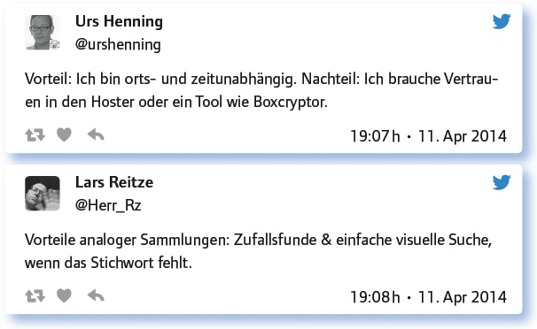
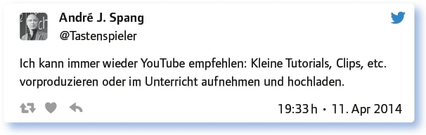
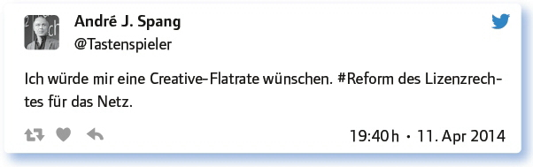
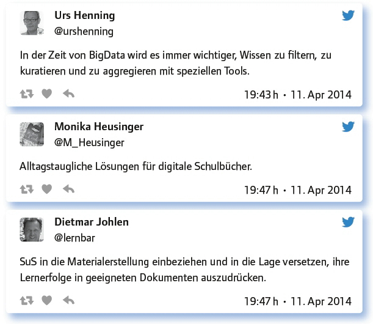

3.7
Unterrichtsmaterialien digital organisieren: Tricks, Tipps, Hilfestellungen (#EDchatDE vom 11. April 2014)
von Mandy Schütze
Wer kennt das Klischee nicht: Lehrer haben riesige Flächen in ihren Wohnungen mit Material zugebaut, das sie im Unterricht bereits verwendet haben, verwenden wollen oder irgendwann vielleicht einmal brauchen könnten. Lehrer sind die Messies in Sachen Lehrmaterialien.
Mit Rollkoffern begeben sie sich Jahr für Jahr zur didacta, sie drucken das halbe Internet aus und wenn sie dann in Pension gehen, transportieren sie ihr Material ins Lehrerzimmer, weil sie glauben, dass all ihre Beute aus all den Lehrerjahrzehnten vom Jagdinstinkt der Kollegen aufgezehrt werden wird und so der teure Müllcontainer vermieden werden kann. Wenn es ja mal nur ein Klischee wäre!
Dass die Sammlung von Unterrichtsmaterial deutlich platzsparender und darüber hinaus so gestaltet werden kann, dass man zur rechten Zeit auch das richtige Material findet, ahnen jene, die sich digitalen Medien ausliefern und sich von diesen all die Dienste erweisen lassen, die sich bei der Sammlung und Organisation von Unterrichtsmaterial so bieten.
Tricks, Tipps und Hilfestellungen zur digitalen Organisation von Unterrichtsmaterial soll es bei diesem Beitrag geben.
Erstmals gab es bei diesem #EDchatDE keine Links, sondern die Fragen vorab. Dieses Vorgehen auf so positive Resonanz, dass folgend beides kombiniert wurde: vorbereitende Links und die Fragen vorab.
Welche Vorteile analoger und digitaler Materialsammlung gibt es für Lehrende? Deine Meinung ist gefragt!
Bei dieser Frage wurden viele Vorteile digitaler Materialsammlungen angesprochen: die einfache Suche, das schnelle Finden, Synchronisation auf mehreren Geräten, die vielen Möglichkeiten, sofort und überall damit weiterzuarbeiten, die effizientere Organisation und Archivierung, der leichter mögliche Austausch mit Kollegen. Ein weiterer Vorteil ist, dass der Unterricht damit individueller an die Lerngruppen angepasst und differenzierend gearbeitet werden kann.
Digital hält länger, es ist mobil, flexibler zu re-usen und macht einfach mehr Spaß!
Analoges trainiert in Ordnern ordentlich die Oberarme :-). Digitales kürzt die Vorbereitung immens ab, wenn alles mal da ist.
Digital pro: Inhalte sind leichter zu finden, per Cloud habe ich alle Materialien immer dabei, Multimedia, Tagging, Teilen, Kollaboration.
Ein digitales Medium lässt sich einfacher in mehreren Kontexten abspeichern bzw. verlinken.
Die analoge Materialsammlung fand erwartungsgemäß bei der #EDchatDE-Runde kaum noch Freunde. Allerdings wurde auch auf Risiken und Nachteile digitaler Sammlungen hingewiesen. Und einen kleinen Vorteil hat das analoge Arbeiten, neben der Möglichkeit, auch bei ausgefallenem Strom und fehlendem Internet zu arbeiten, dann doch.

Welche Voraussetzungen für eine sinnvolle digitale Materialsammlung kannst du benennen? Wie soll man einsteigen? Welche Fragen haben Einsteiger?
Die wichtigste Voraussetzung ist eine intelligente Archivierungsmöglichkeit, da die Digitalisierung das Sammeln von weit mehr Materialien ermöglicht als bei einer analogen Sammlung. Dafür gab es einige Tooltipps von den Kollegen:
Mobiles Device, am besten Tablet ist sehr hilfreich. Apps: Evernote, Stiftapp (Penultimate), Dropbox, GoogleDocs.
Ich nutze für meine Planungen Evernote, für Materialien Tex.
Für digitale Materialsammlung nutze ich Anwendungen, auf die man von allen Geräten aus zugreifen kann, mit automatischer Synchronisation.
Digitale Materialsammlung: Ordnungssystem – Tags oder Ordnerstruktur.
Mein Tipp: Eingescannte Sachen mit Texterkennung durchsuchbar machen, sonst bleibt Mehrwert auf der Strecke.
Außerdem gab es hilfreiche Tipps wie z. B. die Selbstbeschränkung, um nicht zum digitalen Messie zu mutieren. Man sollte hinterfragen, was man sammelt und nur das speichern, was auch wirklich (potenziell) benutzt wird. Außerdem wurde darauf hingewiesen, dass von digitalen Materialsammlungen regelmäßig Backups gemacht werden müssen.
Welche rechtlichen Probleme gibt’s bei digitalen Materialsammlungen für Lehrende? (Sind es andere als bei analogem Material?)
Bei dieser Frage wurde klar, dass den vielen theoretisch möglichen Anwendungsfällen, insbesondere dem Weiterbearbeiten und Tauschen mit Kollegen, juristische Grenzen gesetzt werden. Auch dessen sind sich die Teilnehmer des #EDchatDEs bewusst und zeigen Alternativen, beispielsweise OER – offene Bildungsmaterialien, auf.
Praxistipps: Tools, Tricks, Tipps? Was hat sich bewährt, was nicht? Bitte mit zahlreichen Links.
Als Tools wurden häufig folgende genannt: Wikis, LectureNotes für Android, Evernote, One- Note, LibreOffice, Inkscpae, Browser, Feedly, Edutags, GeoGebra, Penultimate, Explain Everything, GoogleDocs, DropBox Teacher Tool, Crosswords, Quip, Owncloud. Weitere Tools, die sich spontan und sofort im Unterricht einsetzen lassen finden sich hier:
Tipps und Tricks der Autorin:
Verschlagwortung nutzen,
Blind tippen lernen,
Sinnvolle Struktur von Ordnern oder Notizbüchern,
Sicherung in der Cloud oder regelmäßig Backups erstellen,
Immer dran bleiben und weiter nutzen, auch wenn es am Anfang Schwierigkeiten bei der Umstellung gibt, es lohnt sich.

Wie können dich Anbieter von Unterrichtsmaterial bei deiner Arbeit unterstützen? Wo behindern sie dich?
Das Wunschkonzert der Edchat-Kollegen brachte viele Vorschläge, z. B.:
Gute Ideen haben, Weiterarbeit mit dem Material ermöglichen; b) Remixen und Teilen.
Lösen von immer neuen eigenen Plattformen.
Es gibt gute Papierunterlagen mit Übungen, die es dann aber nicht digital gibt. Ich zahle gern für digitale Übungen.
Ich möchte Bildmaterial (und Audio und Video und Animation) bekommen, das ich in meiner IWB-Software frei kombinieren kann.
Digitalisate oder zumindest die digitalen, gekauften Arbeitsblätter sollte man legal & digital an SuS weiterreichen dürfen.
Größere Auswahl digitaler Schulbücher, die frei editierbar sind.
Alle Antworten spitzen sich in dieser Antwort von Tastenspieler zu:

Bei den Antworten wurde deutlich, dass die Probleme und Wünsche sehr ähnlich sind: hilfreich wären Rechtssicherheit mit mehr Möglichkeiten, Materialien zu bearbeiten und zu teilen sowie das generelle Vorhandensein digitaler Materialien, wenn für analoge bereits bezahlt wurde.
Welche Anregungen, Fragen hast du sonst noch zum Thema?

Fazit:
Unterrichtsmaterial digital zu organisieren beschäftigt viele Kollegen, da das Internet sowie die Schulbuchverlage Material bereitstellen, dass sinnvoll strukturiert gespeichert werden will, damit es leicht wiedergefunden wird. Es gibt eine Reihe von Tools, die die Organisation vereinfachen, besonders häufig wurden Evernote und OneNote genannt. Die wichtigsten Tipps bei diesem Thema sind, seine Dateien durch Backups zu sichern und nicht wahllos alles zu sammeln.
Viele Erfahrungsberichte von Kollegen gibt es in Lehrerblogs (hier eine Liste von Lehrerblogs: https://wiki.zum.de/wiki/Lehrerblogs) sowie bei einer Google-Suche unter dem Stichwort „papierlose Schultasche“.
Internetlinks zum Thema:
Unterrichtsvorbereitung mit Evernote: http://www.lehrerfreund.de/schule/1s/unterrichtsvorbereitung-evernote/4369
Zur rechtlichen Regelung über digitale Kopien: http://www.schulbuchkopie.de/index.php/die-digitale-kopie
„Schummelzettel“ zur Verwendung freier Materialien: http://web2-unterricht.blogspot.de/2013/11/schummelzettel.html
Linkliste:
Link zum vollständigen Protokoll: